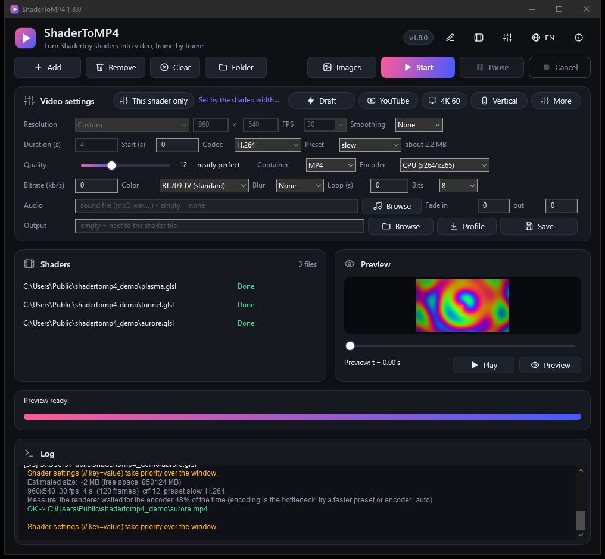
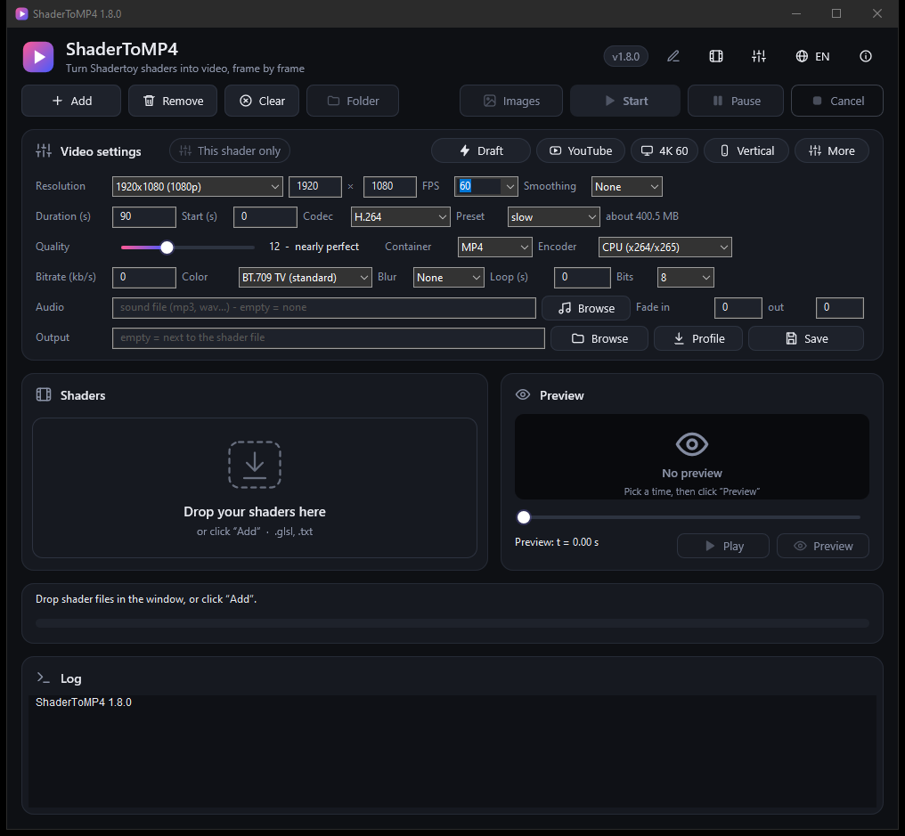
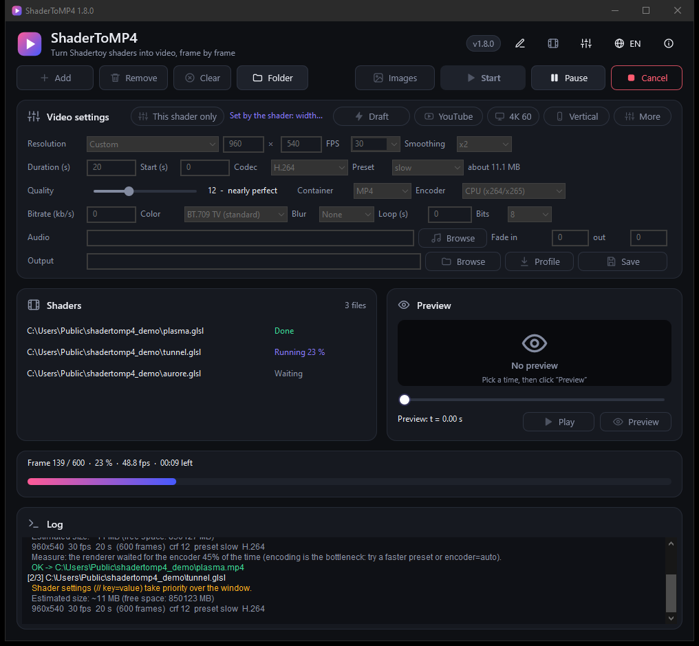
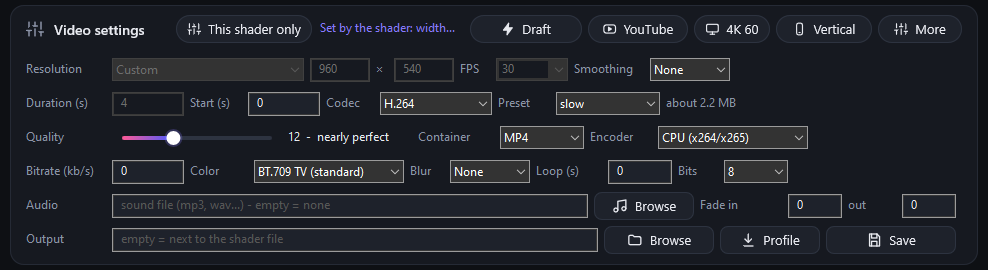
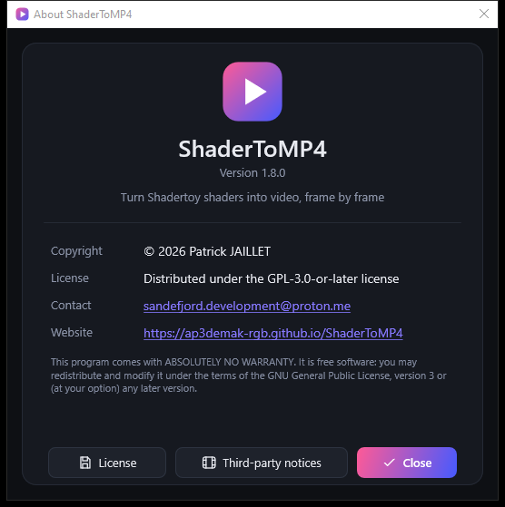
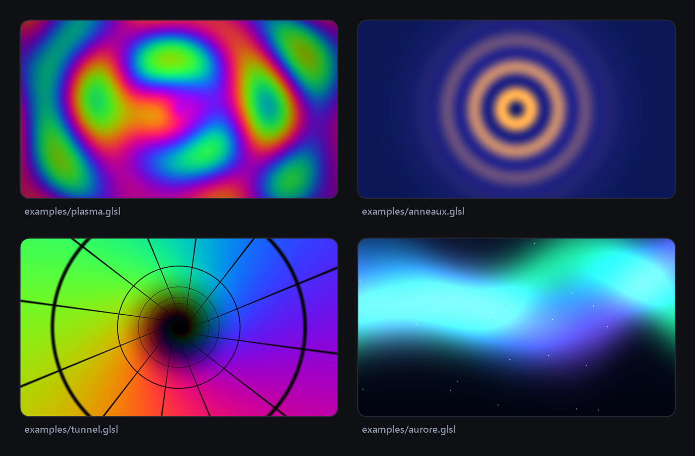

ShaderToMP4
Turn a Shadertoy shader into video, frame by frame, with exact timing. No capture, no stutter, no installer.
Transforme un shader Shadertoy en vidéo, image par image, avec un temps exact. Pas de capture, pas de saccades, pas d'installeur.
DownloadTélécharger GitHub
Why ShaderToMP4?Pourquoi ShaderToMP4 ?
Exact timing
Temps exact
Each frame is rendered at time n / fps and sent straight to ffmpeg. A shader running at 5 fps live still gives a perfectly smooth video.
Chaque image est rendue au temps n / fps et envoyée directement à ffmpeg. Un shader à 5 images par seconde en direct donne une vidéo parfaitement fluide.
Maximum quality
Qualité maximale
Up to 16384 px wide, ×4 supersampling, motion blur, correct BT.709 colour, lossless x264 / x265.
Jusqu'à 16384 px de large, supersampling ×4, flou de mouvement, couleur BT.709 correcte, x264 / x265 sans perte.
Fast and reliable
Rapide et fiable
Parallel render and encode, optional hardware encoders, and long renders made in parts that resume after any interruption.
Rendu et encodage en parallèle, encodeurs matériels en option, et longs rendus par parties qui reprennent après toute interruption.
Practical
Pratique
Built-in preview, presets (YouTube, 4K, vertical), audio with fades, perfect loop, queue, pause and cancel.
Aperçu intégré, préréglages (YouTube, 4K, vertical), audio avec fondus, boucle parfaite, file d'attente, pause et annulation.
Shadertoy and more
Shadertoy et plus
Textures, buffers, sound pass, mouse, VR; animated parameters, post-processing, HDR and transparency, montage of several shaders, and an editor for the shader and its passes.
Textures, tampons, passe son, souris, VR ; paramètres animés, post-traitement, HDR et transparence, montage de plusieurs shaders, et un éditeur pour le shader et ses passes.
Portable
Portable
Nothing to install. Settings, languages and ffmpeg stay in the application folder.
Rien à installer. Réglages, langues et ffmpeg restent dans le dossier de l'application.
Free software
Logiciel libre
Distributed under the GPL-3.0-or-later license, interface in nine languages (English, French, German, Spanish, Italian, Portuguese, Dutch, Japanese, Chinese).
Distribué sous licence GPL-3.0-or-later, interface en neuf langues (anglais, français, allemand, espagnol, italien, portugais, néerlandais, japonais, chinois).
ScreenshotsCaptures d'écran




ExamplesExemples

Download and startTélécharger et démarrer
- Download the portable archive for your system (Windows, Linux x86-64 / ARM64, macOS) from the Releases page and unpack it anywhere.
- Run
ShaderToMP4.exe(Windows),./ShaderToMP4(Linux) orShaderToMP4.app(macOS); on Windows and Linux it offers to downloadffmpegthe first time (SHA-256 checked); on macOS install it with Homebrew. - Drop your
.glslshaders in the window and click Start.
- Télécharge l'archive portable de ton système (Windows, Linux x86-64 / ARM64, macOS) depuis la page Releases et décompresse-la où tu veux.
- Lance
ShaderToMP4.exe(Windows),./ShaderToMP4(Linux) ouShaderToMP4.app(macOS) ; sous Windows et Linux il propose de téléchargerffmpegla première fois (empreinte SHA-256 vérifiée) ; sous macOS, installe-le avec Homebrew. - Glisse tes shaders
.glsldans la fenêtre et clique sur Démarrer.
Requires an OpenGL 3.3 graphics card and Windows 10 (1703 or newer) or 11, a Linux desktop (X11 / Wayland, glibc 2.35+), or macOS 10.13+.Nécessite une carte graphique OpenGL 3.3 et Windows 10 (1703 ou plus récent) ou 11, un bureau Linux (X11 / Wayland, glibc 2.35+) ou macOS 10.13+.